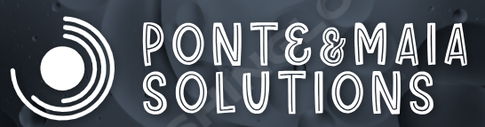

Bem-vindo ao nosso site de suporte em TI
Somos especializados em soluções personalizadas de TI para empresas de todos os tamanhos. Nossos serviços incluem suporte técnico, manutenção de software, e consultoria para otimização de sistemas.
Nossos Serviços
Suporte Técnico
Oferecemos suporte técnico remoto e presencial para resolver rapidamente qualquer problema de software.
Manutenção de Software
Garantimos o funcionamento contínuo dos seus sistemas através de manutenção preventiva e corretiva.
Consultoria em TI
Ajuda especializada para melhorar a performance dos seus sistemas e otimizar os processos da sua empresa.
O que nossos clientes dizem
"A Ponte&Maia Solutions transformou a nossa infraestrutura de TI, deixando nossos processos mais eficientes e sem falhas!"
- João Silva, CEO da Empresa XYZ"Excelente suporte técnico. Sempre rápidos e eficientes na resolução dos nossos problemas de software."
- Maria Oliveira, Diretora de TI da Empresa ABC